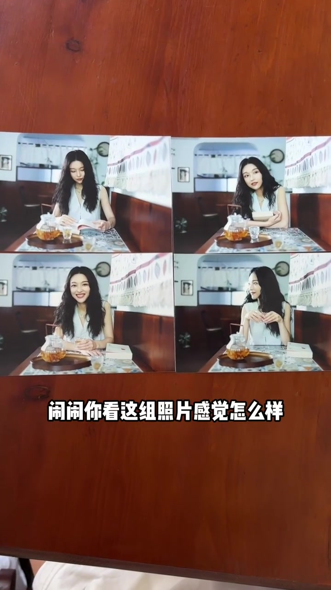
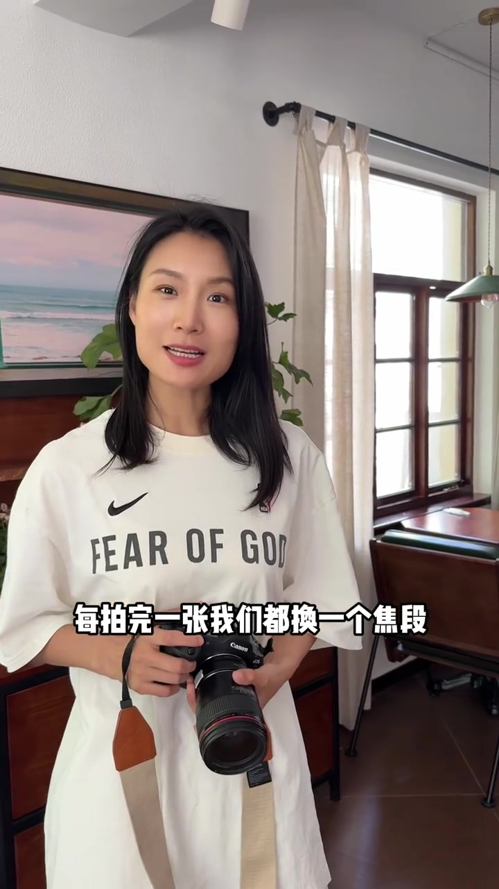
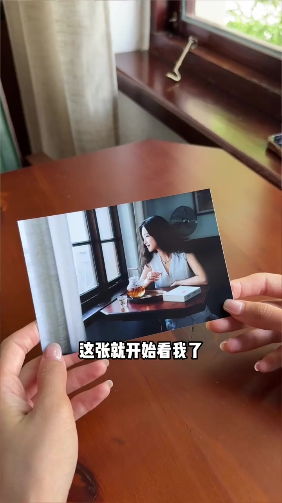

开场：四张单看都好看，放一起却差不多
画面先甩出一组咖啡馆人像四连拍：同一位长发女生、同一张木桌、同一套玻璃茶壶，姿势略有变化，但空间关系几乎不变。拍摄者把手机递给朋友「闹闹」看，问感觉怎么样——单看都挺好，合在一起却像在重复同一件事。
画面字幕：「闹闹你看这组照片感觉怎么样」
说明：Whisper 把称呼识成「娜娜」、把「焦段」识成「胶段」等。下文叙述以可见字幕与画面为准；页面末尾仍完整保留全部 Whisper 分段。

诊断：拍摄时没挪地方，焦段也一直没换
朋友点出原因——拍摄位置几乎没动。画面切到其中一张人像，字幕强调「看他们的焦段」：视角单一时，拍再多张也还是同一种信息密度。闹闹听完也承认「好像还真是」。
画面字幕：「看他们的焦段」
重拍约定：每拍完一张，就换一个焦段
拍摄者提出重来：每完成一张就换焦段，让闹闹对照前后差异。她手持带红圈的 Canon L 镜头站在室内，笑着布置新一轮拍摄——坐着别动，她先站远一点。
画面字幕：「每拍完一张我们都换一个焦段」

第一张拍远：把咖啡馆环境带进去
远一点的环境镜头里，咖啡馆信息很足——木墙、窗帘、茶具与人物同框。拍摄者解释：如果这是组图第一张，别人一眼就知道你今天在哪，比如咖啡馆、书店，还是海边。画面还插入一张海边剪影，说明「地点信息」才是开篇任务。
画面字幕：「对如果这是组图的第一张」
第二张走近：人和环境都能看见
换镜头后，人物开始看向镜头，咖啡馆背景仍可辨认。拍摄者说这种比例很适合发朋友圈——人和环境都能看清。信息从「地点」推进到「谁在这个地点」。
画面字幕：「这张就开始看我了」

第三张换 85：背景变少，表情变强
字幕明确「现在换85」。拍摄者让闹闹不用看镜头，翻书、喝茶或发呆即可。近景出来后，背景被压缩，人物立刻更突出；她解释：背景少了，第一眼就会落到表情。若今天想拍「人的状态」，这一档就特别合适。
画面字幕：「现在换85」「大家第一眼都会看到你的表情」
最后补细节：茶、手、书、窗边
收尾不再盯脸，而是拍茶、拍手、拍书、拍窗边。闹闹说这些平时都不会拍；拍摄者却提醒——以后回看，最容易想起今天的，往往就是这些碎片。对照前后两组：前面每张在重复同一件事，后面每张都补了一点新内容，合在一起才丰富。
画面字幕：「拍茶拍手」「每一张都补充了一点」
收束：不必背焦段，记住四步就行
闹闹问是不是一定要带很多镜头。回答很干脆：不用。很多相机甚至手机都能做——「你不用记焦段」，只要按四步推进：远一点拍环境 → 走近拍人 → 再近拍表情 → 拍下今天的小细节。真正有故事的照片，不是每张都精彩，而是每张都告诉别人一点新东西；放在一起，才是完整故事。
画面字幕：「你不用记焦段」「只要记住这4步就行」「拍照前先想一想」
片尾文案与口播一致：别急着按快门，先想这一张要记录环境、人物、情绪还是细节。